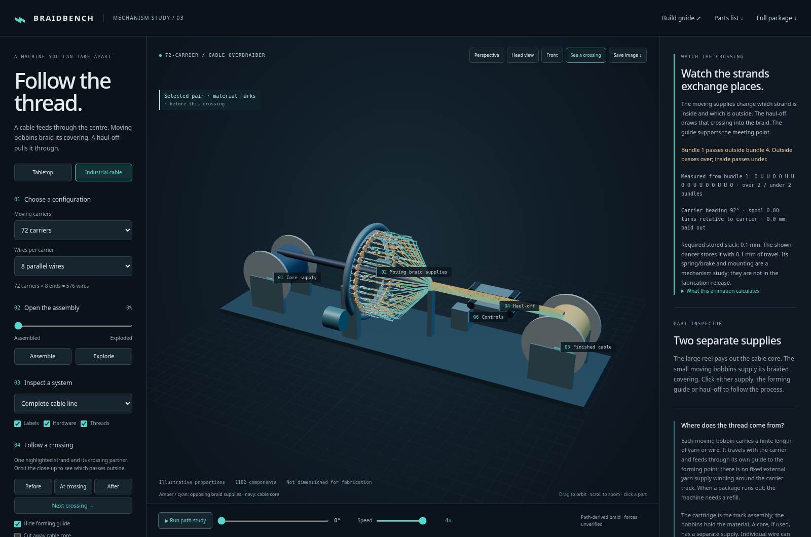
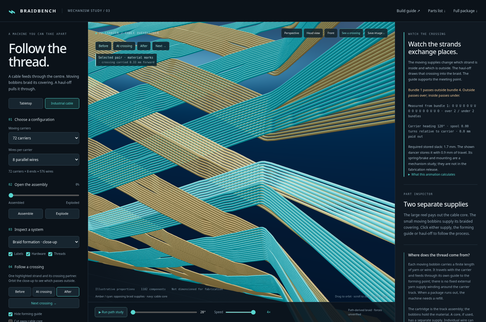

BRAIDBENCH / INDUSTRIAL COMPARISON
Two supplies.
One braided cable.
The braid material rides on the moving bobbins. The cable being covered comes from a separate, much larger supply reel.
In the viewer, choose Industrial cable. Choose “See a crossing” to expose the meeting point and follow two strands from supply into the braid. All wires are visible by default. The forming guide is hidden; the physical core stays visible. Use the separate “Cut away cable core” control to inspect the far side, or “Show only this pair” to isolate the highlighted bundles. Run or scrub the animation; use the head view, system selector and explosion control to inspect the flow.

Where each material comes from
- Wind the braid supplies. Yarn or wire is transferred from stock packages onto the small bobbins before loading. A bobbin can carry one end or several parallel ends. Wardwell’s parallel winding system, for example, supports 1–10 ends per spindle.
- Load the moving carriers. Each carrier holds a bobbin and tensioning hardware. The bobbin pays out as its carrier moves around the core, exchanging inside/outside positions with the opposite family. In both models, the amber and cyan strands begin at the package, pass through a guide and a visible return-pulley/dancer route, then converge into the braid.
- Feed the cable separately. A large payoff reel supplies the cable through the centre. It turns about its own axle as cable unwinds; it does not orbit the braiding head. Commercial machines can integrate both core payoff and finished-product take-up, as on Wardwell’s Speedmaster.
- Pull, then collect. A capstan or opposed-belt haul-off sets cable travel. The take-up reel collects it while its rotational speed adapts to the growing wound diameter. Carrier speed relative to line speed changes braid pitch. The model uses a schematic caterpillar haul-off; belt details and a working drive are omitted.
Yes, bobbin capacity limits the run
The cartridge in this project is the interchangeable track assembly. The bobbins hold the yarn. The shortest remaining supply can end a run even when the core reel is still nearly full. Larger packages, finer material and prepared replacement bobbins extend production, but do not create an unlimited supply. Industrial equipment can detect broken ends and empty bobbins; those features are listed for the Speedmaster.
For a straight cylindrical braid with constant angle α measured from the cable axis, a simple helix estimate is finished length ≈ available length per end × cos(α). At 45°, 100 m per end gives approximately 71 m of cable coverage before allowing for setup, tails, crimp, stretch and waste. This is a geometric estimate, not a production-yield prediction.
The small tabletop yarn envelope has an outer radius of 11 mm, a 5 mm core radius and 35 mm winding width: approximately 10.6 cm³ before packing voids. For the viewer’s 0.45 mm strands and an assumed 70% packing fraction, that envelope holds roughly 46.5 m per bobbin, or 32.9 m axial length at an assumed 45° braid angle before losses. This capacity example does not predict the variable local angle of the reconstructed braid. Real winding and cord compression must be measured. Larger bobbins would require a new carrier-clearance study.
Hundreds of wires, or hundreds of carriers?
Both are possible, and they mean different things. 72 carriers × 8 parallel wires = 576 wires, but only 72 independently travelling bundles. The parallel ends from each bobbin cross other bundles together. Changing the wire count does not by itself change the carrier crossing pattern.
| Real example | What it establishes |
|---|---|
| HERZOG PZh 1/72-224 | 72 carriers; horizontal take-off; 105 × 200 mm bobbins with a listed capacity of 1,505 cm³. Intended for wire braid and overbraiding hoses and tubes. |
| HERZOG KBh 1/256-80 | 256 actual carriers; smaller 40 × 27 mm bobbins, 28.5 cm³ each; recommended for 10–80 mm diameter wire braids. |
| Wardwell parallel bobbin winder | 1–10 ends per spindle. This demonstrates how multiple wires can be prepared on one bobbin; it does not certify a particular combination with either HERZOG machine. |
A wide cable does not necessarily require hundreds of carriers. Material width, bundle width, braid angle and required coverage also matter. A specific machine and loading need to be selected for the actual cable and covering material.

What this new model includes
The comparison includes interactive 48- and 72-carrier views, 1 / 4 / 8 parallel ends, moving supplies, a central cable, a forming guide, haul-off, payoff and collection reels, part explanations, exploded views and a continuous playback-speed slider. The industrial close-up uses 0.16 mm wires around a 28 mm core. Each wire’s crossing partners and over/under sequence are checked against its actual guide, and finite-wire separation is checked through formation. The 1 / 4 / 8 end options share a carrier-centre profile and pitch; they show changes in coverage. Supply capacity stays constant in the animation: depletion, winding layers and run-out are explained rather than simulated.